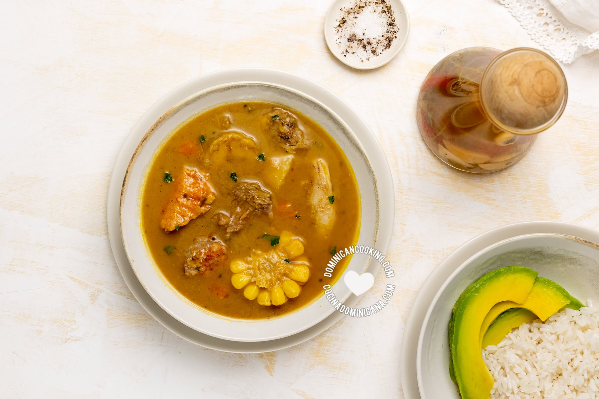

MUST-TRY DOMINICAN FOODS
Let's start by saying that Dominican cuisine is rich and vast, and while we have a lot in common with other countries in Latin America, there are many dishes that are uniquely Dominican. There will be a mix of both types here. This is not even a comprehensive list of Dominican dishes, but it's a start if you want to learn a little bit about our cuisine, or want to know what to order at a Dominican restaurant. And if you want to learn more, or are doing this for homework, dig in, there are hundreds of recipes and articles on our blog. To start my list I've picked some authentic Dominican foods and recipes that you MUST try, and I simplified the task by just picking the top ten most-searched Dominican recipes in our blog.